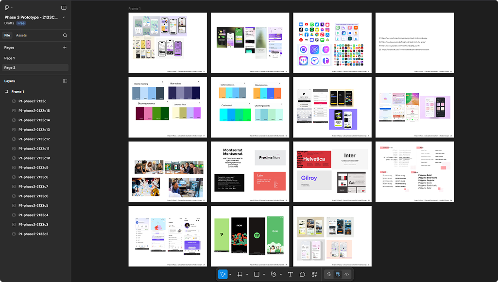
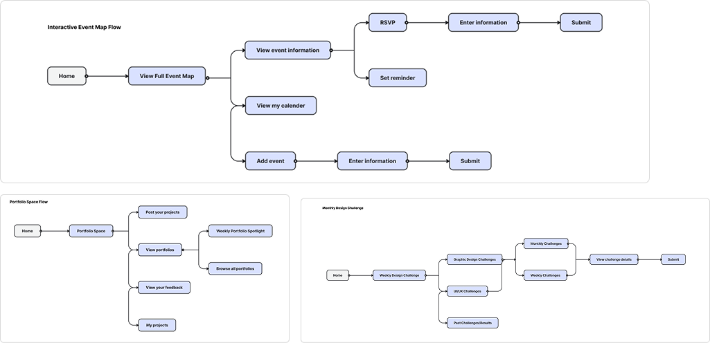
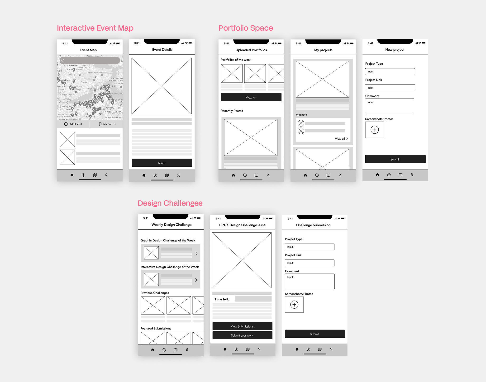

GraphiXplore App: Get design students more involved with the local design community
OVERVIEW
What is GraphiXplore?
GraphiXplore is a mobile app crafted to help graphic/interactive design students stay engaged and inspired beyond the classroom. Built as a fully functional prototype, this solo UI/UX project showcases my full design process from concept to high-fidelity interface, created in Figma during the Summer 2025 semester.
ROLE
UI/UX Designer
TIMEFRAME
2 Months (Summer 2025)
TYPE
Academic Project
THE PROBLEM
💡
How can we engage Graphic/Interactive design students beyond the classroom and into the real world?
Design instructors at Valencia College observed a recurring issue: many graphic and interactive design students lacked participation in the real world design community. Students often lacked motivation to pursue creative work beyond assigned coursework, largely because they didn’t know where to find local design events or opportunities to connect with professionals.
Additionally, many students expressed a desire for meaningful feedback. This gap between classroom learning and real-world engagement highlighted the need for a solution that could better support students’ growth, motivation, and professional connection.
USERS & AUDIENCE
Who are we designing for?
In this project, we are designing for interactive and graphic design students, faculty, and alumni. The target audience is typically in the age range of 18-28 years old. Users of the app are likely very tech savvy as graphic and interactive design students regularly work using computers and design programs. The biggest frustration among the target user base is the lack of outreach for local design events.
2 User Personas I created during the design process
ROLES & RESPONSIBILITIES
My role in this project was being a UI/UX Designer. As this was a solo project, my role focused on:
Creating Personas
Collecting Research
Creating User Flows
Wireframing
Prototyping
SCOPE & CONSTRAINTS
Defining the project boundaries
The goal was to create a centralized hub where graphic and interactive design students, alumni, and faculty could stay engaged with their local design community. The project scope included:
- Designing a loading screen
- Creating login and registration flows
- Designing a home screen
- Designing a user account page
- Design three major interactive features
- Branding, logo design and visual identity for the app.

PROCESS & ACTIONS
Collecting Research & Inspiration
The first step of the design process was collecting research and inspiration for app flows, color palettes, typography, and overall mobile app UI.
Designing User Flows
A major step of the process involved creating user flows specifically for the three major interactive features of the app, which are the Interactive Event Map, Portfolio Space, and Monthly Design Challenge.
Turning User Flows into Wireframe Sets
The next step of the design process were to create low-fidelity wireframe sets to visualize the key screens from our user flows. This stage helped validate the overall functionality before moving into high-fidelity design. Below are examples of select screens from the three major interactive features.
FINAL PROTOTYPE
Using Figma to create the final prototype
The final prototype transforms earlier concepts and wireframes into a cohesive, high-fidelity experience. With completed visuals, branding, and interactive flows, it demonstrates how the app would function in practice and brings the design vision to life. Below are the three main features of the app.
HOME & ACCOUNT SCREEN
Central Hubs for Navigation, Discovery, and User Identity
The home screen acts as a portal for students to dive into the design community and explore all features of the app. The design of the user account screen is made for students to customize their profile and view their achievements.
INTERACTIVE DESIGN MAP
Discover local design events
The interactive events section gives students easy access to all relevant local design opportunities, including portfolio reviews, workshops, and critique sessions. Users can RSVP directly within the platform and receive automated reminders to ensure they stay engaged and prepared.
PORTFOLIO SPACE
Built for Creative Growth
A space where students, alumni, and professionals can share their portfolios and get feedback from each other. The portfolio space is a dynamic place for sharing portfolios, receiving meaningful critique, and discovering weekly standout talent.
DESIGN CHALLENGES
Central Hubs for Navigation, Discovery, and User Identity
Weekly challenges for designers to participate in. At the end of the week, users submit their work and get judged by professionals in the industry.
KEY TAKEAWAYS
What I learned while working on GraphiXplore
Working on this project, I learned the importance of designing flows that feel intuitive to users and the importance of designing a product that is enjoyable for your target audience to use. Professor feedback suggested that some sections of the app should be made clear what their function is. With more time, I would definitely add more necessary details to flows and create more clarity in certain sections of the app.